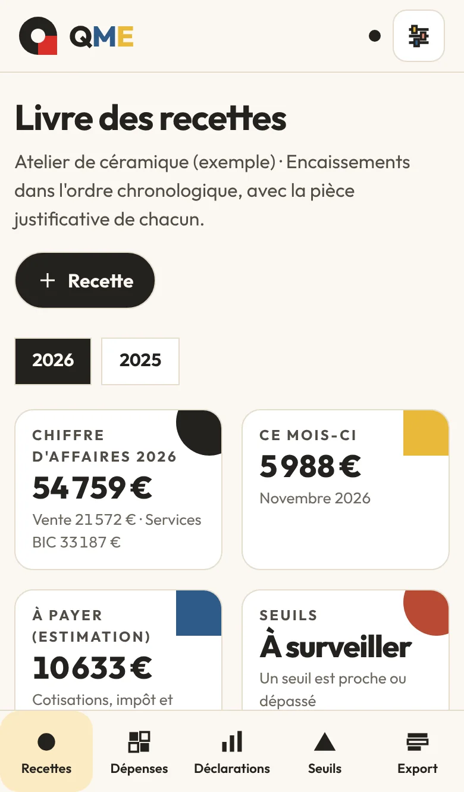

Micro-entrepreneur
Obligatoire : chaque encaissement, dans l'ordre.
Le faire en fin d'année, c'est reconstituer douze mois de relevés.
Livre recettes-dépenses

Capture de la démo · Données fictives
Un outil d'aide, pas un logiciel comptable.
Taux 2026 sourcés et modifiables. Achat unique, sans abonnement.
Besoin de plus ? Relié à vos devis et à vos factures : je le construis sur mesure.
qm-engineering.fr